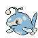

#171 LANTURN

TYPE:
WATER/ELECTRIC
Pokedex Description
Pokémon Gold / Silver:
The light it emits is so bright that it can illuminate the surface of the sea from about 5 km deep.
Pokémon Crystal:
Uses the shiny part of its body, which was once a fin, to attract its victims.
Base Stats
| Health | Attack | Defense | Speed | At. Esp. | Def. Esp. |
|---|---|---|---|---|---|
| 125 | 58 | 58 | 67 | 76 | 76 |
Max Stats Level 50
| Health | Attack | Defense | Speed | At. Esp. | Def. Esp. |
|---|---|---|---|---|---|
| 185 - 231 | 63 - 109 | 63 - 109 | 72 - 118 | 81 - 127 | 81 - 127 |
Max Stats Level 100
| Health | Attack | Defense | Speed | At. Esp. | Def. Esp. |
|---|---|---|---|---|---|
| 260 - 353 | 121 - 214 | 121 - 214 | 139 - 232 | 157 - 250 | 157 - 250 |
Movements by Level
Level - Gold/Silver Crystal - Attack - Type - Power - Precision - PP - Description
1 - 1 - WATER BUBBLE - 20 - 100 - 30 - Can reduce the SPEED.
1 - 1 - NORMAL SUPERSONIC - 55 - 20 - Sonic waves that cause confusion.
1 - 1 - ELECTRIC THUNDER WAVE - 100 - 20 - Causes paralysis to the enemy.
5 - 5 - NORMAL SUPERSONIC - 55 - 20 - Sonic waves that cause confusion.
13 - 13 - NORMAL WHIP - - 100 - 15 - More powerful if you have low HP.
17 - 17 - WATER GUN WATER - 40 - 100 - 25 - Spray water to attack.
25 - 25 - ELECTRIC SPARK - 65 - 100 - 20 - Attack that can paralyze.
33 - 33 - GHOST CONFUSED RAY - 100 - 10 - Causes confusion.
45 - 45 - NORMAL THROW DOWN - 90 - 85 - 20 - Attack that also hurts the player.
53 - 53 - HYDRO PUMP WATER - 120 - 80 - 5 - Very powerful water type attack.
1 - 1 - NORMAL SUPERSONIC - 55 - 20 - Sonic waves that cause confusion.
1 - 1 - ELECTRIC THUNDER WAVE - 100 - 20 - Causes paralysis to the enemy.
5 - 5 - NORMAL SUPERSONIC - 55 - 20 - Sonic waves that cause confusion.
13 - 13 - NORMAL WHIP - - 100 - 15 - More powerful if you have low HP.
17 - 17 - WATER GUN WATER - 40 - 100 - 25 - Spray water to attack.
25 - 25 - ELECTRIC SPARK - 65 - 100 - 20 - Attack that can paralyze.
33 - 33 - GHOST CONFUSED RAY - 100 - 10 - Causes confusion.
45 - 45 - NORMAL THROW DOWN - 90 - 85 - 20 - Attack that also hurts the player.
53 - 53 - HYDRO PUMP WATER - 120 - 80 - 5 - Very powerful water type attack.
Movements by MT/MO
MT/MO - Attack - Type - Power - Accuracy - PP - Description
MT03 - DAMN??? - 100 - 10 - Doesn't work the same with ghosts.
MT06 - TOXIC POISON - 85 - 10 - Poison that increases the damage.
MT07 - ELECTRIC CANNON - 100 - 50 - 5 - Attack that always paralyzes.
MT10 - HIDDEN POWER NORMAL - - 100 - 15 - Power varies depending on the POKÉMON.
MT13 - SNORING NORMAL - 40 - 100 - 15 - Only used when asleep.
MT15 - HYPER BEAM NORMAL - 150 - 90 - 5 - 1st turn: Attack 2nd turn: Rest.
MT17 - PROTECTION NORMAL - 100 - 10 - Thwart the attack. It can fail.
MT18 - RAIN DANCE WATER - 90 - 5 - Improves water attacks for 5 turns.
MT20 - STAMINA NORMAL - 100 - 10 - Always leave 1 PS, at least.
MT21 - FRUSTRATION NORMAL - - 100 - 20 - Based on the lack of loyalty.
MT25 - THUNDER ELECTRIC - 120 - 70 - 10 - Attack that can paralyze.
MT27 - REVERSE NORMAL - - 100 - 20 - Attack based on loyalty.
MT32 - DOUBLE TEAM NORMAL - 100 - 15 - Improves evasion skill.
MT34 - WIG NORMAL - 90 - 15 - Causes confusion and raises ATTACK.
MT35 - SLEEPWALKER NORMAL - 100 - 10 - Attack randomly while you sleep.
MT44 - REST PSYCHIC - 100 - 10 - Sleep 2 shifts for full cure.
MT45 - ATTRACTION NORMAL - 100 - 15 - Fall in love with the opposite gender.
MO03 - SURF WATER - 95 - 100 - 15 - Very powerful water type attack.
MO05 - FLASH NORMAL - 70 - 20 - Blinds the enemy and reduces precision.
MT06 - TOXIC POISON - 85 - 10 - Poison that increases the damage.
MT07 - ELECTRIC CANNON - 100 - 50 - 5 - Attack that always paralyzes.
MT10 - HIDDEN POWER NORMAL - - 100 - 15 - Power varies depending on the POKÉMON.
MT13 - SNORING NORMAL - 40 - 100 - 15 - Only used when asleep.
MT15 - HYPER BEAM NORMAL - 150 - 90 - 5 - 1st turn: Attack 2nd turn: Rest.
MT17 - PROTECTION NORMAL - 100 - 10 - Thwart the attack. It can fail.
MT18 - RAIN DANCE WATER - 90 - 5 - Improves water attacks for 5 turns.
MT20 - STAMINA NORMAL - 100 - 10 - Always leave 1 PS, at least.
MT21 - FRUSTRATION NORMAL - - 100 - 20 - Based on the lack of loyalty.
MT25 - THUNDER ELECTRIC - 120 - 70 - 10 - Attack that can paralyze.
MT27 - REVERSE NORMAL - - 100 - 20 - Attack based on loyalty.
MT32 - DOUBLE TEAM NORMAL - 100 - 15 - Improves evasion skill.
MT34 - WIG NORMAL - 90 - 15 - Causes confusion and raises ATTACK.
MT35 - SLEEPWALKER NORMAL - 100 - 10 - Attack randomly while you sleep.
MT44 - REST PSYCHIC - 100 - 10 - Sleep 2 shifts for full cure.
MT45 - ATTRACTION NORMAL - 100 - 15 - Fall in love with the opposite gender.
MO03 - SURF WATER - 95 - 100 - 15 - Very powerful water type attack.
MO05 - FLASH NORMAL - 70 - 20 - Blinds the enemy and reduces precision.
Pokédex Gold/Silver/Crystal By Professor Dog.